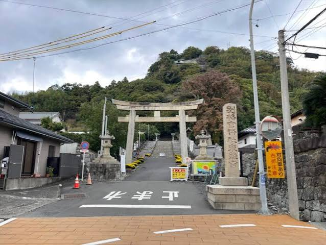
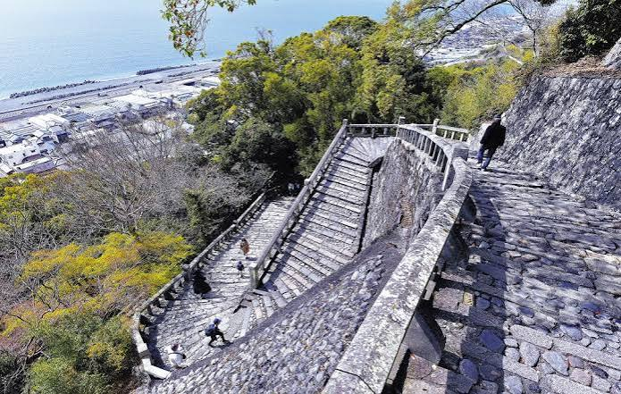
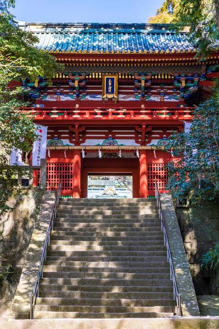
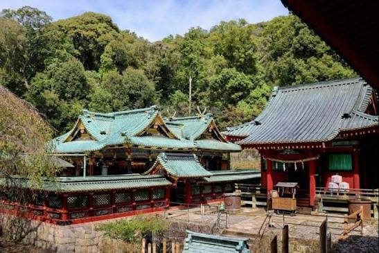

まずは旅の始まり！日本平駅からロープウェイに乗車します。目の前に広がる青い駿河湾や緑豊かな山々を空から眺めながら、約5分間のワクワクする空中散歩で久能山へ向かいます。

ロープウェイを降りて少し歩くと、いよいよ久能山東照宮の境内へ到着。一歩足を踏み入れた瞬間、目に飛び込んでくる豪華絢爛な国宝の社殿に、「うわぁ、すごい…！」と思わず息をのむ美しさです。

社殿の参拝が終わったら、さらに奥の石段を登って徳川家康公の眠るお墓（御廟所）へ。木々に囲まれた静寂と歴史の重みを感じる神聖な空気の中、そっと手を合わせてお参りをします。

最後は、山の上からどこまでも続く青い駿河湾の絶景を見下ろして大満足！心地よい潮風を受けながら、歴史と自然の両方をたっぷり満喫できる最高の締めくくりになります。